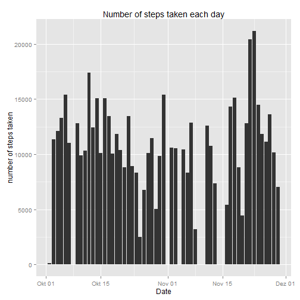
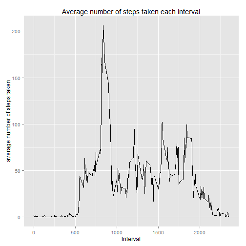
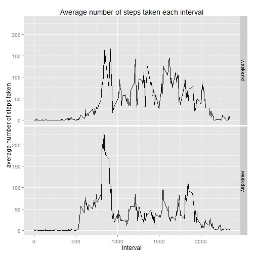

Load needed packages:
library(plyr);
library(ggplot2);
library(timeDate);
Load the dataset:
data <- read.csv("activity/activity.csv");
Convert the date:
data$dates <- as.Date.character(data$date);
Get the data without NAs in "steps":
idsNA <- lapply(data$steps,is.na);
idsNotNa <- lapply(idsNA,identical,FALSE);
dataWithoutNA <- data[unlist(idsNotNa),];
Group data by date and calculate some statistics:
groupedByDate <- ddply(dataWithoutNA, c("date"), summarise,
meanSteps = mean(steps),
sdSteps = sd(steps),
numSteps = sum(steps));
groupedByDate$date <- as.Date.character(groupedByDate$date);
ggplot(groupedByDate, aes(date,numSteps)) +
geom_histogram(stat="identity") +
labs(x="Date", y="number of steps taken", title="Number of steps taken each day") +
theme_grey();

The mean and median of the total number of steps taken per day are as follows:
mean(groupedByDate$numSteps);
## [1] 10766.19
median(groupedByDate$numSteps);
## [1] 10765
Group data by interval and calculate some statistics:
groupedByInterval <- ddply(dataWithoutNA, c("interval"), summarise,
meanSteps = mean(steps),
sdSteps = sd(steps),
numSteps = sum(steps));
Plot time series:
ggplot(groupedByInterval, aes(interval,meanSteps)) +
geom_line() +
labs(x="Interval", y="average number of steps taken", title="Average number of steps taken each interval")+
theme_grey( );

The interval with the maximum averaged number of steps is the following one:
groupedByInterval[which.max(groupedByInterval$meanSteps),1];
## [1] 835
Number of missing values in the dataset:
sum(unlist(lapply(data$steps,is.na)))
## [1] 2304
Get indices of row with NAs and create new variable to store new cleaned dataset
indexesNAs <- which(idsNA == TRUE);
dataWithImputation <- data;
Iterate over all rows with NAs and recplace steps whith rounded mean of steps taken on average for that interval
for(i in 1:length(indexesNAs)){
actIndex <- indexesNAs[i];
dataWithImputation[actIndex,1] =
round(groupedByInterval[groupedByInterval[,1] ==
dataWithImputation[actIndex,3],2]);
}
groupedByDateWithImputation <- ddply(dataWithImputation, c("date"), summarise,
meanSteps = mean(steps),
sdSteps = sd(steps),
numSteps = sum(steps));
groupedByDateWithImputation$date <- as.Date.character(groupedByDateWithImputation$date);
ggplot(groupedByDate, aes(date,numSteps)) +
geom_histogram(stat="identity") +
labs(x="Date", y="number of steps taken", title="Number of steps taken each day") +
theme_grey();
mean(groupedByDateWithImputation$numSteps);
## [1] 10765.64
median(groupedByDateWithImputation$numSteps);
## [1] 10762
The values does not differ extremely from those of the first part. If we imputate the missing values on the estimates of the total daily number of steps, we would mix the number of steps for each interval which are extremely different from each other depending on the specific interval. This would lead to a "bad" imputation.
Get the day of the week for each date and create factor variable which stores if day of week belongs to the weekend or a weekday (using german names!).
dayOfWeek <- weekdays(dataWithImputation$dates);
isWeekend <- dayOfWeek %in% c("Samstag","Sonntag");
weekendWeekday <- factor (isWeekend, levels = c(TRUE,FALSE), labels=c("weekend","weekday"));
dataWithImputation$weekendWeekday <- weekendWeekday;
Group data by interval and day of week (weekend of weekday) and plot data.
groupedByIntervalWithImputation <- ddply(dataWithImputation, c("interval","weekendWeekday"), summarise,
meanSteps = mean(steps),
sdSteps = sd(steps),
numSteps = sum(steps));
ggplot(groupedByIntervalWithImputation, aes(interval,meanSteps)) +
geom_line() +
labs(x="Interval", y="average number of steps taken", title="Average number of steps taken each interval") +
facet_grid(weekendWeekday ~ .) +
theme_grey();
 A3: As we can conclude from the above plot, their are some differences in the activity pattern between weekdays and weekends.